Grab Airport Transfers & Reserved Rides
Optimizing advance airport bookings to reduce passenger no-shows, handle flight delays automatically, and guide travelers directly to their pickup terminal doors.
SEA airport pickup splits into on-demand and reserved rides
Airport rides represent some of the highest-value transactions in the ride-hailing space. At Grab, airport pickups are split between two distinct user behaviors:
While on-demand bookings represent the vast majority of volume (80%), advance reserved bookings account for 20% of trips. This 20% forms a highly lucrative, premium segment of users seeking maximum reliability and peace of mind.
Looking at the funnel
Out of all reserved airport ride requests, a meaningful share still failed before completion. Passenger no-shows were the biggest experience and fulfilment risk.
We conducted cold calling and qualitative interviews with users who had cancelled or missed their scheduled pickups to understand the root causes:
"I reached late at the pickup point because my flight was delayed."
Rider Interview • Flight Delay"I didn’t expect the wait time at immigration to be so long."
Rider Interview • Customs Wait"My flight got postponed but I couldn’t modify my ride in time."
Rider Interview • Reservation LockGoal: Improve fulfilment
Problem Statement
How might we reduce cancellations for reserved rides to improve fulfilment, and in turn user retention?
Global benchmarks pointed to flight-aware pickup planning
We compared how Uber and Didi handled reserved airport pickup, from flight capture to post-landing guidance. Toggle between the two flows to see the full screen sequence from the deck.
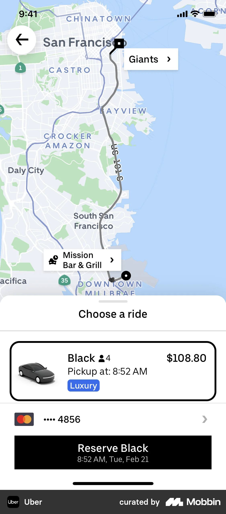
Ride selection
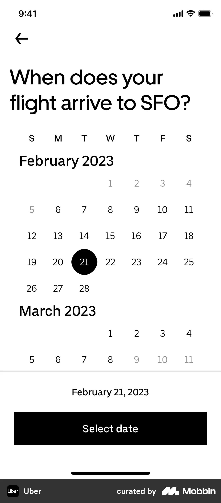
Pickup timing
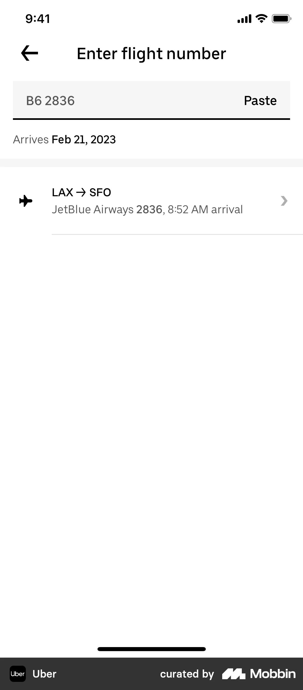
Flight input
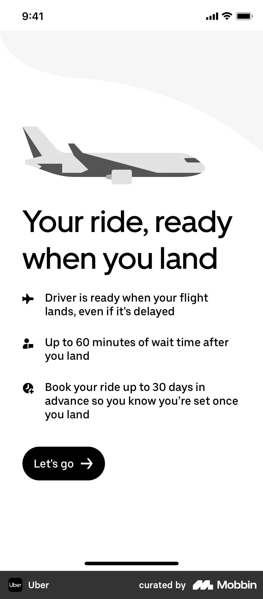
Landing status
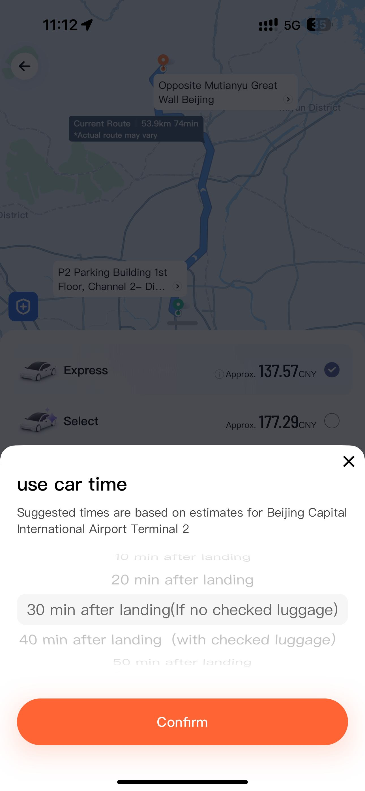
Car time selector
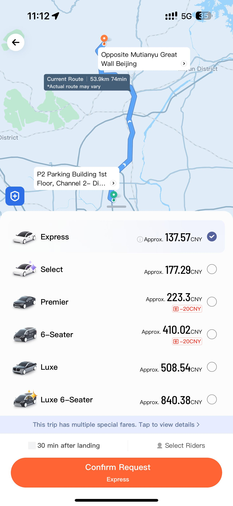
Ride options
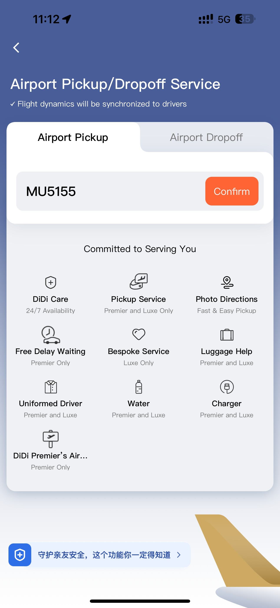
Flight sync
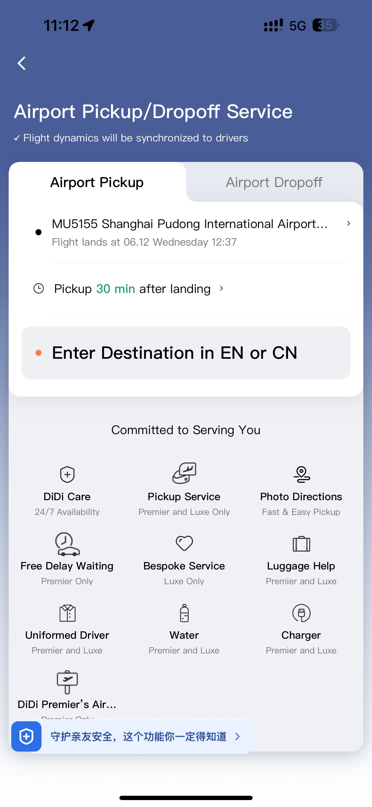
Flight details
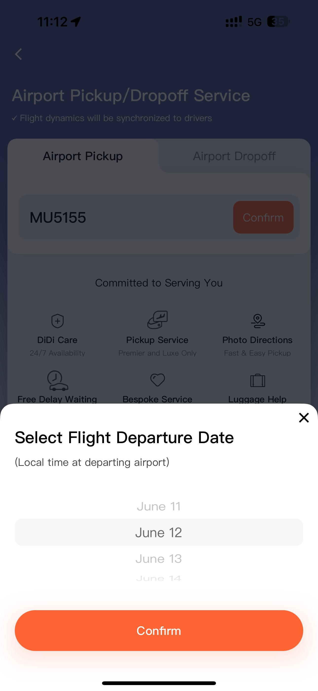
Confirmation
Flight-synced itinerary planning and booking
The first concept connected the existing Transport home surface to a flight-aware airport pickup flow. Instead of asking travelers to guess their exit time, the system could use flight details to recommend the right pickup window.
Universal flight search
Let users search by flight number, departure airport, or airline without knowing the exact format.
Smart itinerary recommendation
Recommend pickup timing based on flight arrival, baggage, immigration, and expected airport exit time.

Transport home entry point
Feedback narrowed the MVP scope
My biggest concern is usually finding a driver once I land at the new airport. Airports are usually a maze to navigate through.
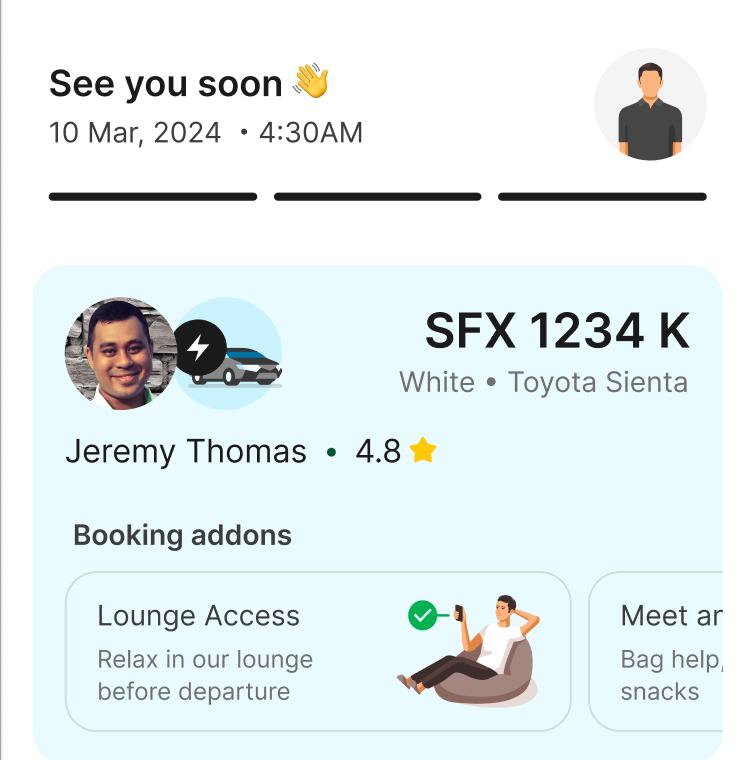
What happens if my flight is delayed? Is there a waiting fee? How long do I have to get out?
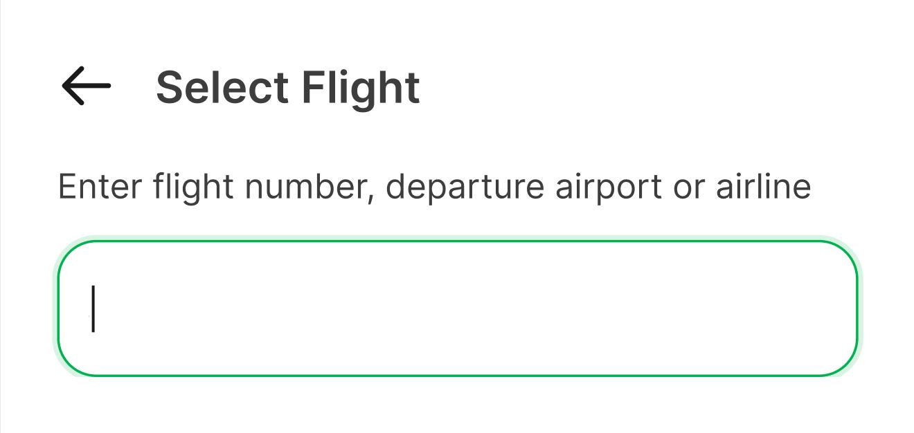
What am I supposed to enter here?
This seems like a lot of work haha!
"Flight selection needed forgiving search, not exact-format entry."
Takeaway 01 • Simplify input"Airport pickup carried the clearest user pain and operational upside."
Takeaway 02 • Focus MVP"Post-booking guidance had to combine delay reassurance, waiting rules, and pickup directions."
Takeaway 03 • Clarify IAFlight selection evolved from manual entry to guided scheduling
Manual flight number
A focused flight-number entry point made the task clear, but users still had to infer how flight details translated into pickup timing.
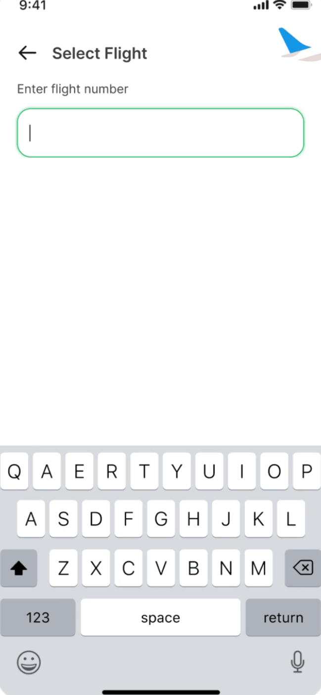
Benefit-led flight input
The benefit callout explained why flight details mattered, but disconnected bottom-sheet selectors still made the flow feel fragmented.
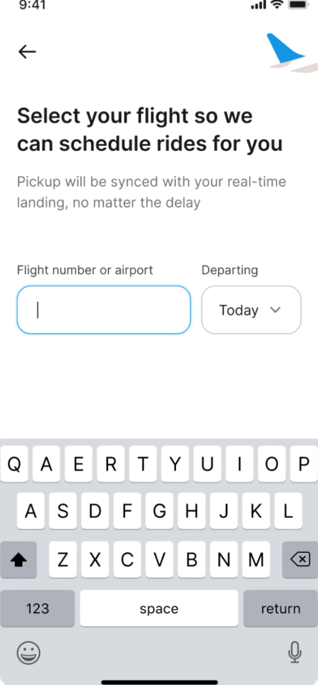
Flight-sync promise
The preferred approach used easier input first, guided flight pickup, external API feasibility, and recommended pickup times.
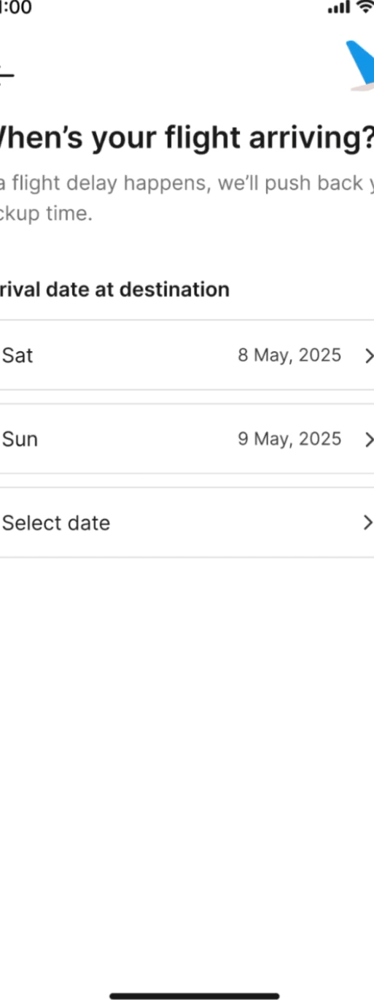
Keep familiar ride-booking steps intact
When designing a new airport-specific service, we avoided overhauling the parts users already understood: drop-off input and vehicle selection.
After flight selection, the flow returns to recognizable Grab ride-booking patterns with dedicated space for taxi type selection and address autocomplete.
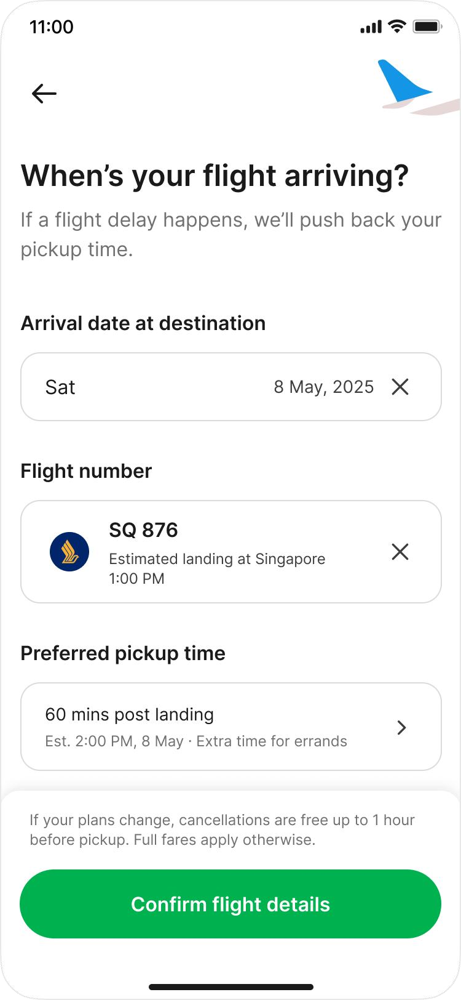
Flight details
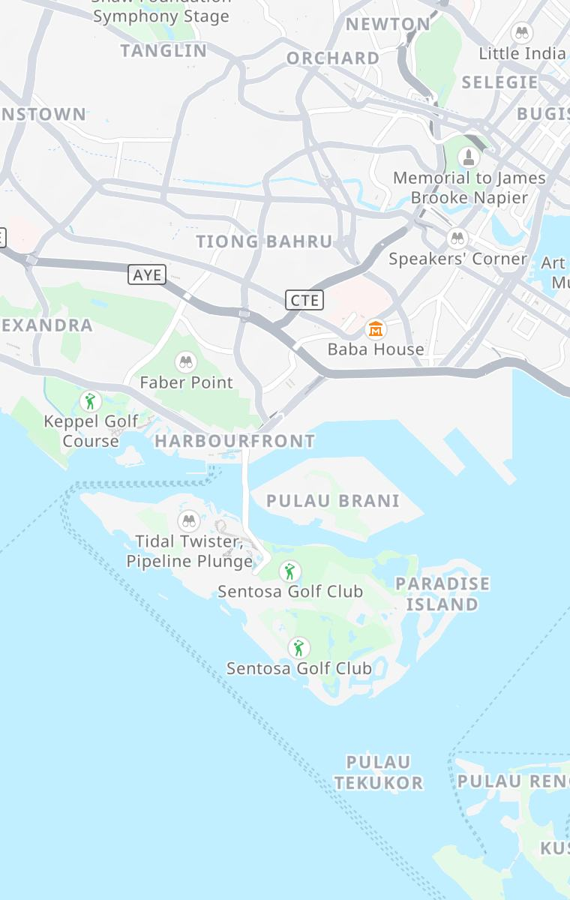
Taxi selector
Door-to-door landing guidance
Proximity trigger
Automatic pickup triggers looked efficient in the design file, but passengers stuck in immigration could create false readiness signals.
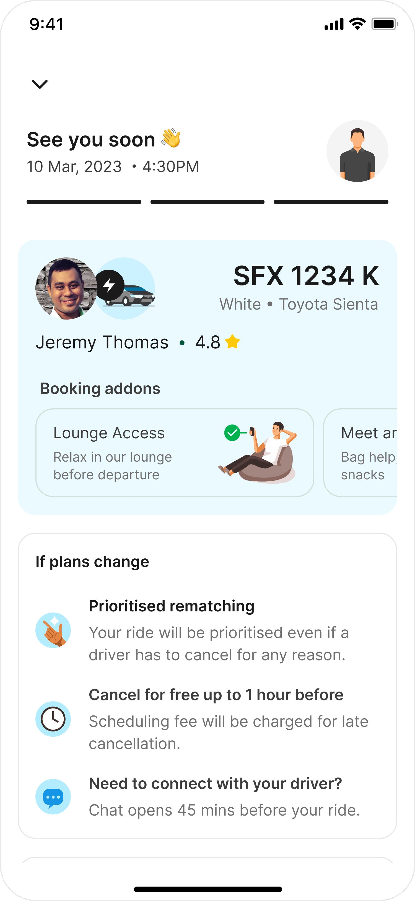
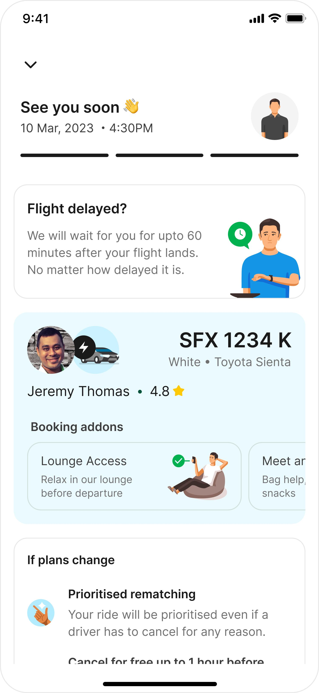
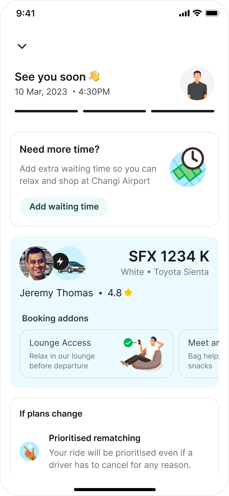
Flight sync & pickup guide
The final design makes the ride status explicit, pushes pickup time back when flights are delayed, and guides users to a precise pickup point.
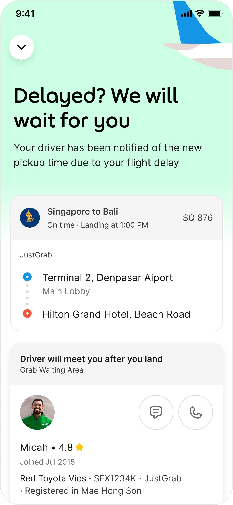
Premium visual identity updates
The visual design direction differentiated Airport Pickup as a premium planned travel moment while staying recognizably Grab.
Service imagery
Human, airport-specific imagery made reserved pickup feel like a supported travel service instead of a generic ride.
Travel cues
Aviation references helped the airport pickup flow read as trip-aware without leaving Grab's visual system.

Type system
Sharper hierarchy supported status reassurance, pickup urgency, and airport-specific service naming.
Impact & Key Learnings
Significant increase in overall advance airport booking adoption post-launch.
Substantial decrease in rider no-show cancellations due to flight delay synchronization.
Slight increase in driver-side cancellations, monitored for driver-waiting policies.
Validate UX with operational constraints
Always optimize for real-world operations. Automated proximity triggers sound perfect in a design file, but real-world queues at immigration require manual buffers and flight-delay sync overrides.
Flexibility is not always best
A super-adaptive, dynamic UI that shifts constantly can increase user anxiety when landing. Simple, step-by-step landmark directions and clear delays assurances provide far greater reassurance.